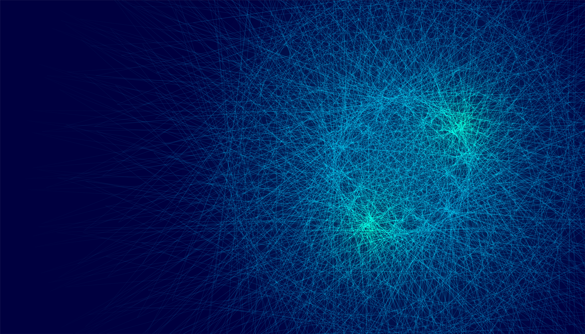
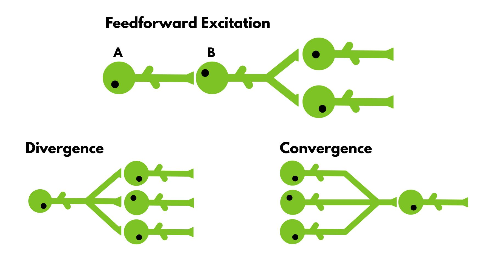
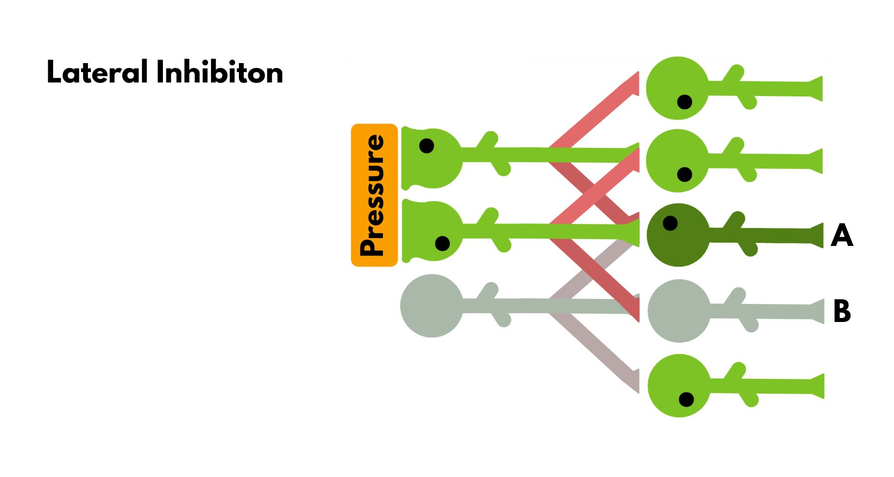

If there is one truth about neurons, it is the fact that they are malleable. A neuron can change how excitable it is (how likely it is to send a signal to the subsequent neuron), how many dendrites it has, or how many axons, etc. When a number of these neurons come together and form connections to relay a specific message that is processed in a particular way, we call this a neural circuit. These circuits define what the message becomes after being processed by several neurons. They are powerful tools for the brain because they change the meaning of the message quite efficiently. Thus, every sound you hear or the object you see doesn’t have the same effect in your brain. Sometimes, you realise some objects more readily (ie, what you focus on), whereas you don’t even hear some sounds (ie, the sound of the pendulum clock).
Feedforward Excitations

Let’s start simple. Feedforward excitation is just neurons exciting each other. Excitement happens when neuron A makes neuron B more likely to fire and send a signal to the following neuron, rather than the signal being lost in between. If the information needs to travel long distances within the body, this is necessary because the signal will have to jump from neuron to neuron. This is how information about hitting your little toe reaches the brain areas that signal pain.
Divergence and Convergence
Divergence is when a neuron makes connections to more than one neuron. The signal is amplified to signal multiple areas in the body. For example, one of the many simple reflexes you have, the flexion withdrawal reflex, utilizes this circuit. The flexion withdrawal reflex is what you imagine when you think of a reflex. When you touch something hot, this is the reflex that makes you pull your arm. The signal travels from your arm to your spinal cord, which triggers two neural pathways. One goes to your extensor muscles and inhibits them (so you don’t extend your arm and pull it back), and the other goes into your flexor muscles and excites them (so you can contract your arm and pull it back). It sometimes excites the distal muscles (your hand if you burn your arm), so you can let go of whatever you are holding, making movement easier.
Convergence occurs when multiple neurons send signals to fewer neurons. This way, the brain can ensure that the signal's existence is not random. Once in a while, a neuron can fire an action potential out of pure luck, without any real information to carry. To reduce the risk of this happening, multiple neurons can be used to verify that the information is genuine. Further, this way, the information can be minimized and controlled, so that the brain is not overwhelmed with new information. This kind of circuit is quite common in your eyes. You have around 100 million cones and rods (the cells that detect color and light) in your eyes. This number is extreme compared to the 2 million ganglion cells (the cells that cones and rods send signals to through bipolar cells. Cones are specialized in color detection, whereas rods detect light (dark or not). For color detection, accuracy is crucial, since the brain can choose from a spectrum of colors. However, detecting light can afford to sacrifice accuracy for greater sensitivity. Thus, in the eyes, we observe more convergent connections between rods to ganglion cells than between cones to ganglion cells. Because the brain needs more data from cones, whereas sensitivity is preferable in rods.
There are also cases where convergence and divergence can be used together. The neurons can converge or diverge, or vice versa. Circuits can integrate inhibition, in which one neuron inhibits many neurons, or many neurons inhibit one.
Lateral Inhibition

Lateral inhibitions are where the circuit gets fun. It is where evolution starts being clever. Look at the image below, and observe two layers of neurons. Neurons in layer one receive the signal and send it through the second layer. Every neuron excites the neuron just below it and inhibits the neuron diagonally to it (normally, inhibition and excitation occur through different neurons, but in the image, this is reduced to a single neuron for simplicity). When there is a stimulus for a set of neurons on layer one, layer two neurons get moderately excited because they are inhibited by two neurons. Except for the neurons that are at the edge, between a signal and no signal. One of them (Neuron A) is inhibited by only one neuron, rather than two, so its ability to send a signal is higher than that of the others. Further, the neuron next to it (Neuron B) is not excited at all and is even inhibited, creating a deeper contrast between the two neurons. This is the circuit that detects edges in sensory information. When looking at the screen, your brain uses this to detect the difference between the screen and the background. When you dip your hand in cold water, your brain detects the line where the water ends more readily rather than getting a signal from your whole arm. Thus, with edge detection, your brain can focus on more important information and grasp objects.
Feedback and Feedforward Inhibition
.jpg)
Feedback inhibition differs from feedforward inhibition in several ways. One is that, in feedforward inhibition, the neuron receives no feedback for its own signalling. In Figure 3, feedback inhibition is shown. Red represents inhibitory neurons, whereas green represents excitatory neurons. Neuron 1B excites an inhibitory neuron 1C, which in turn inhibits neuron 1B. Thus, neuron 1C inhibits itself indirectly. This is called feedback inhibition, and it is especially crucial when the circuit wants the signal to be stable and under control. The feedback from neuron 1B, which comes with a delay, shuts down the signal without allowing excessive signal transduction.
However, the shutdown does not always last long, which can, in turn, create a loop. As neuron 1B inhibits neuron 1C, neuron 1C doesn’t excite neuron 1B anymore, therefore causing neuron 1B to stop firing and stop inhibiting neuron 1C. After a while, the uninhibited neuron 1C resumes firing, restarting the loop. This creates a rhythmic activity that the brain can use to arrange timing. One example of this is the hippocampal theta rhythm, which is generated by these circuits. These are oscillatory activities formed in a region of the brain called the hippocampus that occur and are associated with memory formation. These oscillations create a timeframe during which the brain can encode information for a short period, helping order the event chronologically.
In Figure 3, a feedforward inhibition is also shown. Neuron 2A directly signals the inhibitory neuron 2B while signalling (sometimes) another neuron 2C. Because the inhibitory signal doesn’t depend on neuron 2C’s activity, this circuit does not create rhythmic activity. Instead, it is more for caution than anything else and prevents signals from building up. One example of a system that utilizes these circuits is the muscle tissue. Motor neurons that signal your muscles to contract are excitatory neurons, meaning they can only excite the muscle fibers (cause them to contract). Thus, they need an inhibitory signal to stop them from being excited (i.e., to relax your muscles). This means that whenever you are not moving a muscle, the motor neurons are constantly getting inhibitory signals to limit your movement. This is done through feedforward inhibition.
Mutual Inhibition
.jpg)
The final type of circuit is mutual inhibition, in which multiple neurons mutually inhibit one another. It is a silly-looking circuit that appears to have no purpose, yet it produces remarkably dynamic output. Depending on the properties of the neurons, i.e., the level of inhibition and the level of firing, the circuit's rhythm can change in different ways. Figure 4 shows four of these rhythms that can be formed in a quadruple neuron circuit in a step-like fashion.
Every rhythm can be helpful in certain scenarios. For example, walk-like rhythms (Figure 4a) are used when the body needs precise rhythmic adjustments of muscles, such as during swallowing or peristalsis (the movement of your intestines). Trot (Figure 4b) can be used to create bilateral movement, such as walking, and Bound (Figure 4c) can be used to create high-strength muscle contraction. Whereas gallop (Figure 4d) is useful for producing high-speed, high-frequency movements, such as fast speech.
The important takeaway from these types of circuits is that the meaning neurons create depends not only on the individual neuron but also on its interactions with the environment. The type of connections they form, whether they are inhibitory or excitatory, to what level they are inhibitory or excitatory, the length of the refractory period (the time it takes for a neuron to recharge and be able to send another signal), etc., all determine the end result.
This is one of the reasons brain research is so excruciating. To understand the message it conveys, the context needs to be examined fully. However, the brain's context is so rich that only 1 cubic centimeter of it corresponds to more than a billion CDs' worth of data.